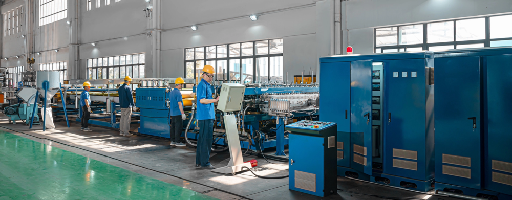
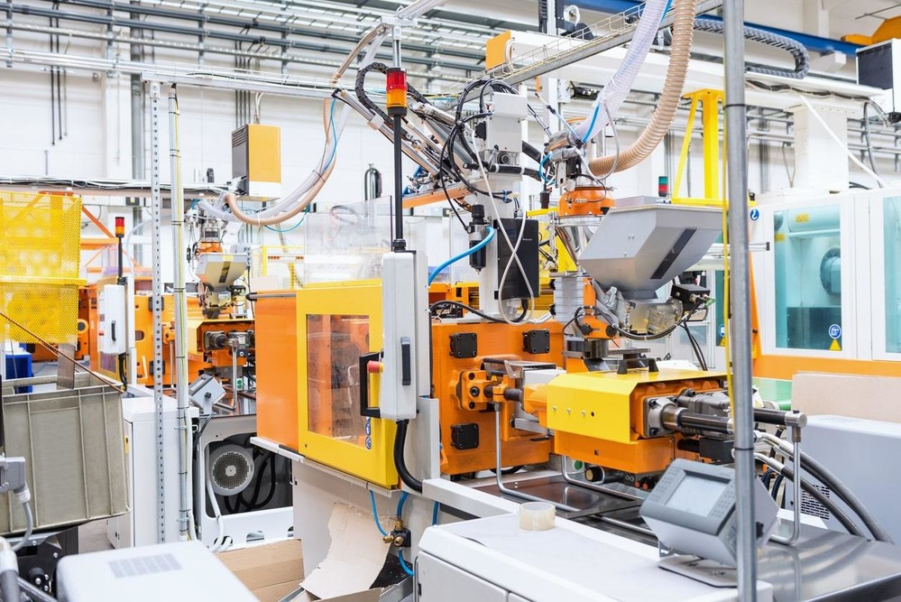
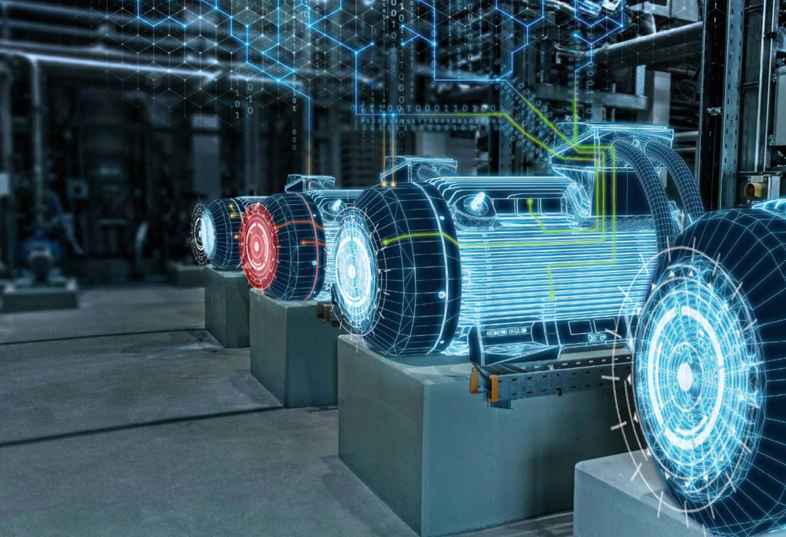
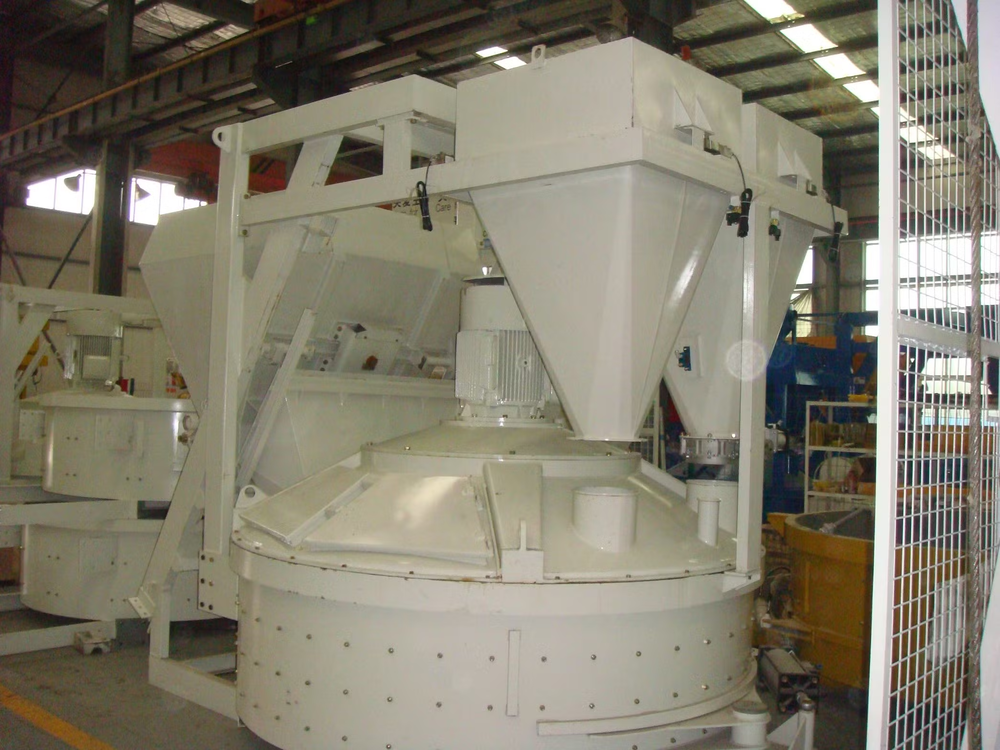
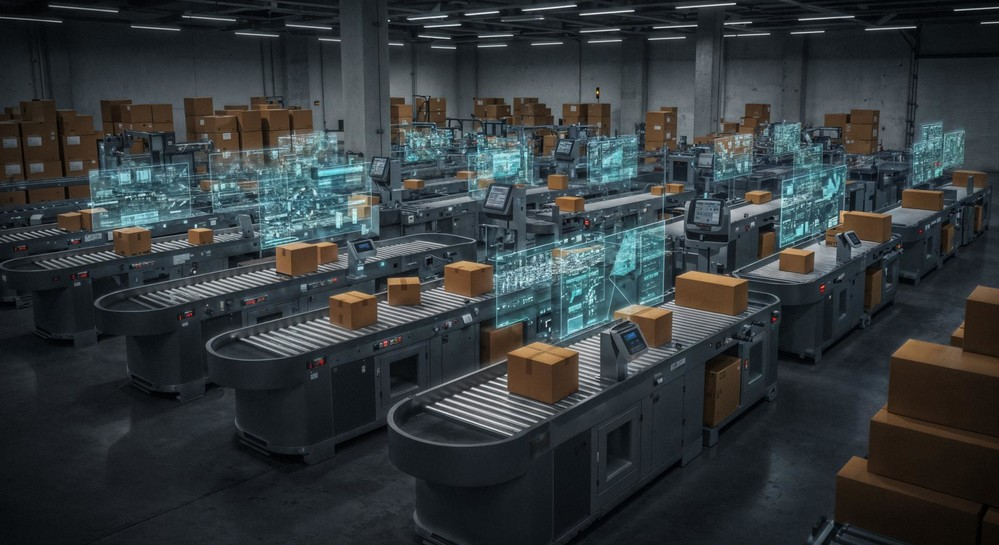
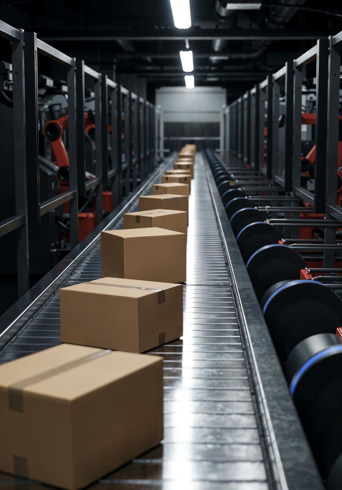

PORTA Applied Factory OS
현장마다 다른 문제에 같은 OS를 설치했습니다.
품질, 생산, 설비, 에너지 데이터를 연결하고 필요한 제조 AX 기능만 빠르게 켠 사례입니다.
Case OS Map
데이터 연결 → 운영 화면 → AI Agent
품질 AX
생산 AX
설비 AX
에너지 AX
현장 과제별로 작은 범위에서 시작하고, 검증된 모듈을 라인과 공장 단위로 확장합니다.
Case Library
현장 과제별로 PORTA 적용 방식을 확인하세요.
초기 연결 범위, 운영 화면, AI 분석 목적이 서로 다른 사례를 같은 구조로 정리했습니다.

설비 AX압출 라인 설비 데이터 관리 시스템설비 데이터 · 운영 화면 · 알림 생산 AXAI 기반 공정 작업 조건 최적화 시스템작업 조건 · 품질 이력 · 원인 분석
품질 AX사출 성형기 실시간 불량 감지 및 예지보전 시스템검사 결과 · 설비 상태 · 이상 감지
설비 AXAI 기반 모터 상태 관리 및 예지 보전 시스템진동 · 온도 · 정비 이력
생산 AX원료 배합 공정 데이터 관리 시스템배합 조건 · 로트 추적 · 리포트 안전 AXAI 기반 수소 배관 상태 관리 시스템압력 · 누설 징후 · 경보
생산 AX포장 공정 자동화 라인 실적 수집·분석 시스템실적 수집 · 병목 분석 · 알림 에너지 AXEV 충전 스테이션 원격 관리 플랫폼원격 상태 · 사용량 · 장애 대응
설비 AX물류 컨베이어 벨트 모터 이상 감지 및 경보 시스템전류 · 진동 · 이상 경보 에너지 AX공장 구역별 에너지 관리 시스템전력 사용량 · 피크 감지 · 절감 리포트 운영 AX아파트 공용 시설 원격 관리 시스템시설 상태 · 원격 점검 · 이슈 기록 환경 AX양식장 수질/환경 데이터 관리 시스템수질 데이터 · 환경 알림 · 운영 기록